My Publications
Interaction Design & Evaluation
- InfoVis 2017
- TVCG 2018
- InfoVis 2018
- EuroVis 2019
- CG&A 2019
- InfoVis 2019
Interactive Visual Data Exploration
- CSCW 2013
- UIST 2014
- MobileHCI 2014 (Honorable Mention)
Interaction for Mobile Devices
Visualization Design & Evaluation
- InfoVis 2014
- GD 2014
- EuroVis 2015
- EuroVis 2016
Evaluating Visualizations
- EuroVis 2014
- EuroVis 2015
- BELIV 2016
Taxonomies & Evaluation Methods
- TVCG 2018
- VisGuides 2018
- EuroVis 2019
ML + Visual Design
Applying Visualization to Specific Domains
- Arxiv 2019
Biology
- InfoVis 2018
Healthcare
- VizSec 2016
Security
Featured Projects
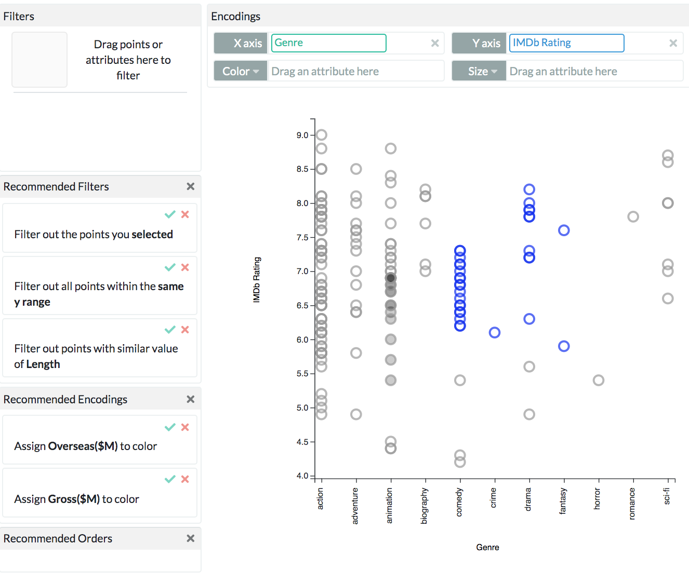
InfoVis
2017 |
TVCG
2018 |
InfoVis
2018 |
EuroVis
2019 |
CG&A2019 |
InfoVis
2019
Visualization by Demonstration is an interaction paradigm that
advocates for decreasing the level of formalism and fundamental knowledge required
for visual data exploration.
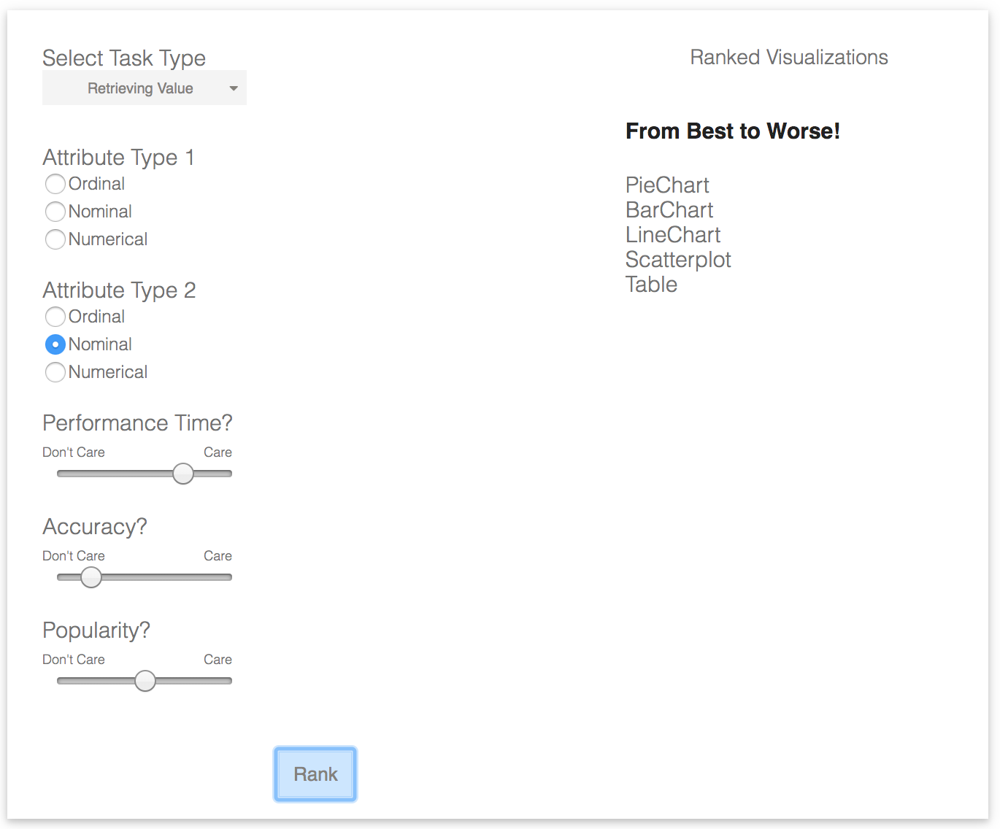
TVCG
2018 |
VisGuides 2018
We propose learning models of visualization design from data
collected using graphical perception studies and build tools powered by the learned
models.
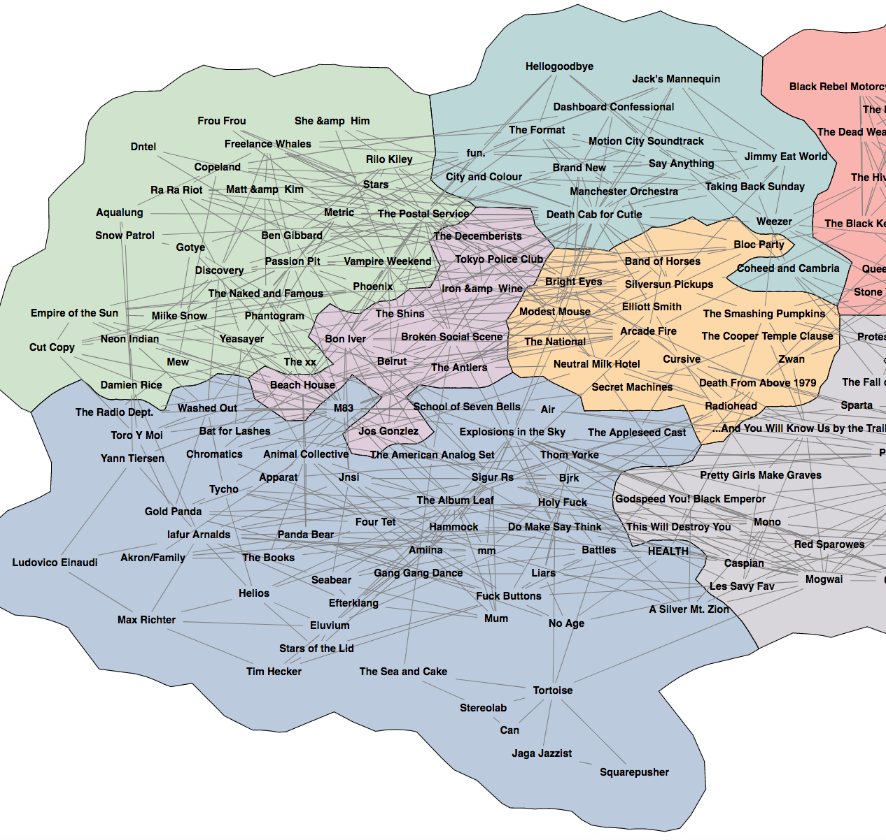
InfoVis
2014 |
GD 2014 |
EuroVis
2014 |
EuroVis
2015 |
EuroVis
2015 |
EuroVis 2016
We define novel metrics and taxonomies for evaluating network
visualizations. We then assessed the effectiveness of different network visualizations using
these metrics.
On a series of projects, we worked on improving user interfaces for mobile
devices in various scenarios such as locating missing items, oral presentation, and
communication.
Selected Publications
2019
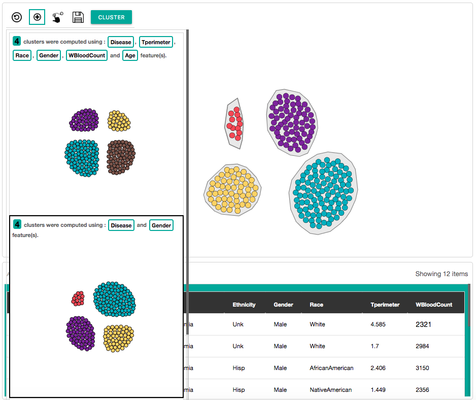

2018
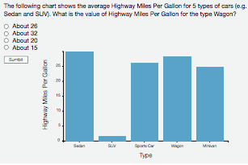
journal
pdf
| Website | Code
+ Other Materials
IEEE Transactions on Visualization and Computer Graphics 2018
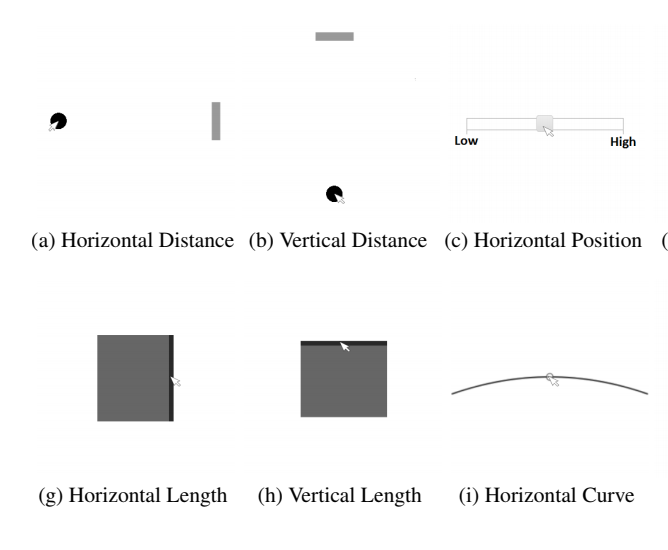
journal
pdf |
Blog post | Website | Code + Other
Materials
IEEE Transactions on Visualization and Computer Graphics 2018
2nd Workshop on the Creation, Curation, Critique and Conditioning of
Principles and Guidelines in Visualization 2018
2017
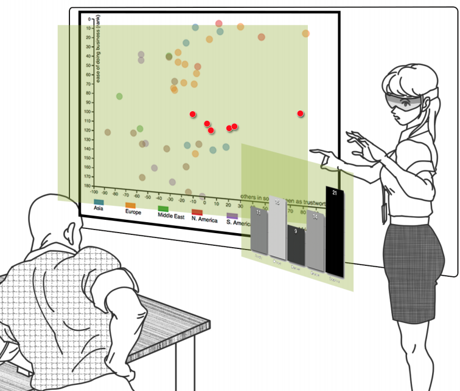
workshop
pdf
IA: Workshop on Immersive Analytics: Exploring Future Interaction and
Visualization Technologies for Data Analytics 2017
2016

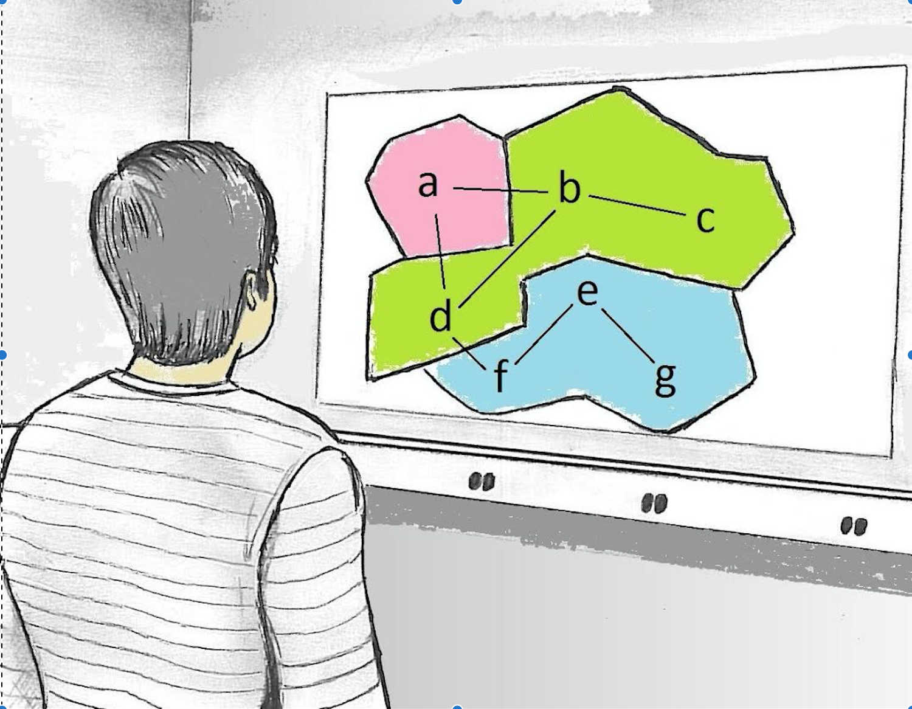
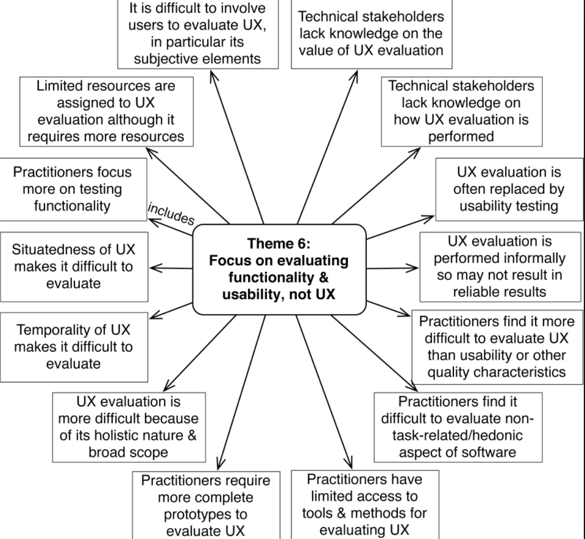
workshop
pdf
6th International Workshop on Beyond time and errors: novel
evaluation methods for Information Visualization (BELIV) 2016
2015
2014
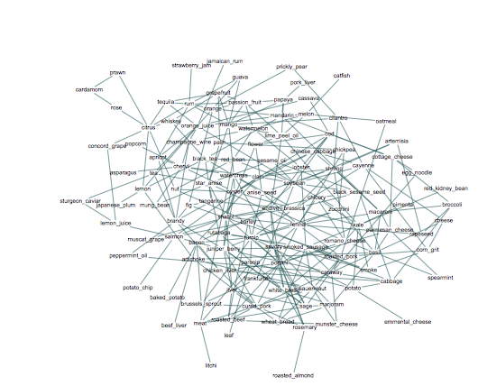
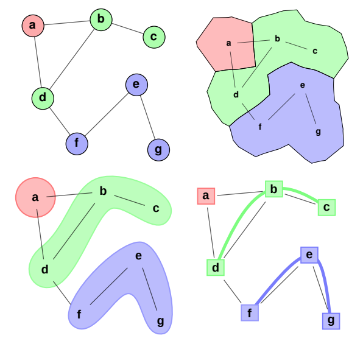
conference
pdf
16th International Conference on Eurographics Working Group on Data
Visualization (EuroVis) 2014